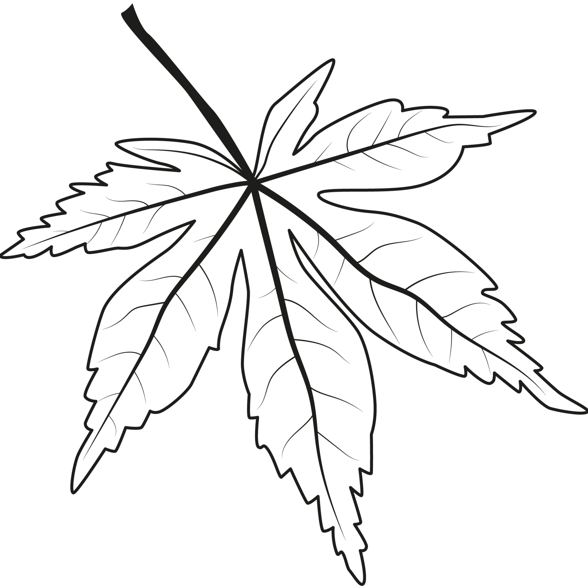
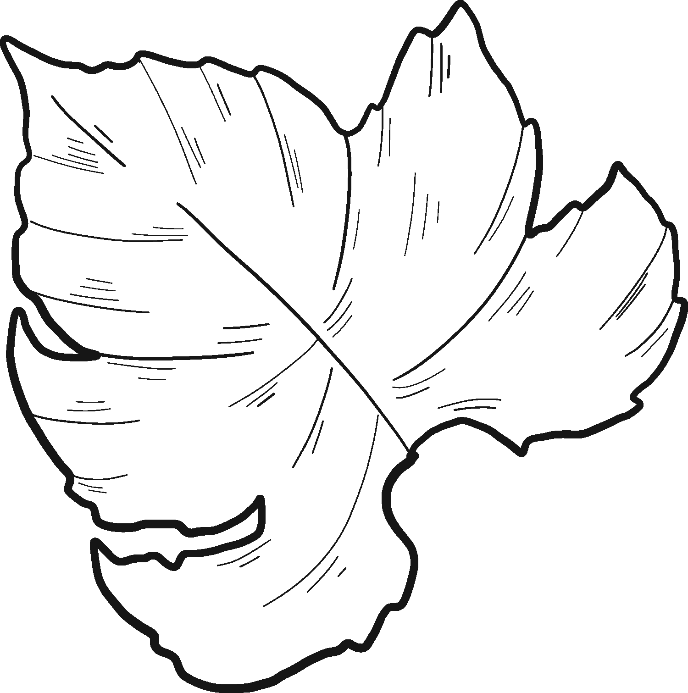
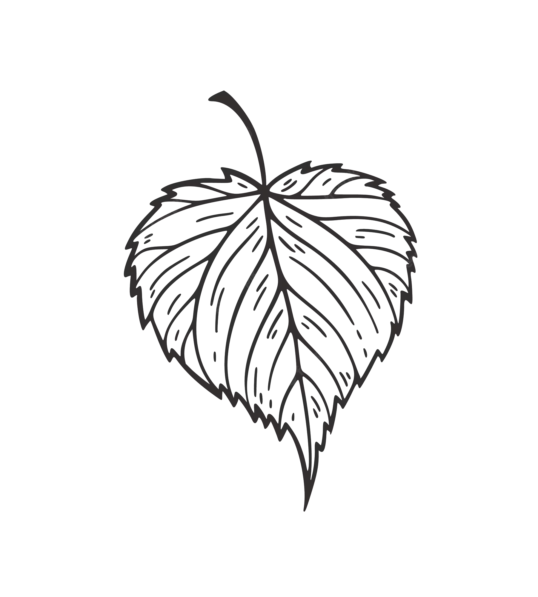

DESDE 1980, TRADICIÓN QUE TE ACOMPAÑA
VINO BLANCO
"La Retorcida: el vino tinto intenso y afrutado elaborado con Prieto Picudo. Descubre sus notas de frutos rojos y especias en cada sorbo. Ideal para platos fuertes. ¡Experimenta la esencia de León en España!"

Descripcion de imagen 1

Descripcion de imagen 2

Descripcion de imagen 3